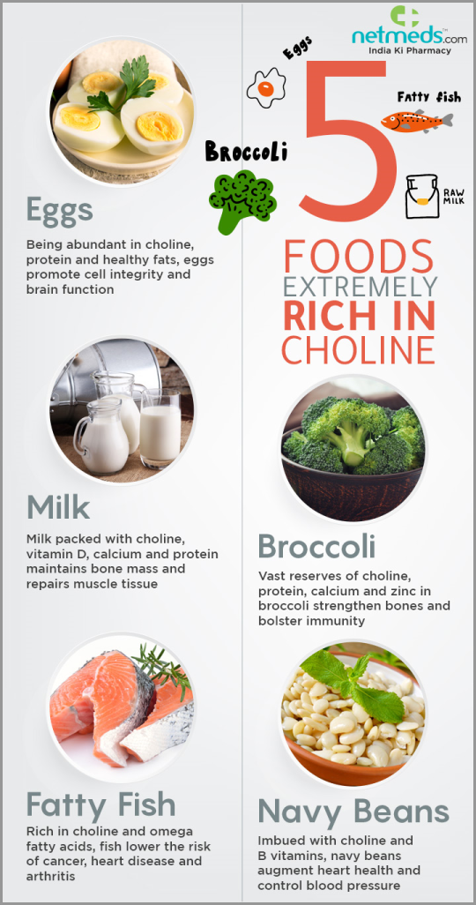
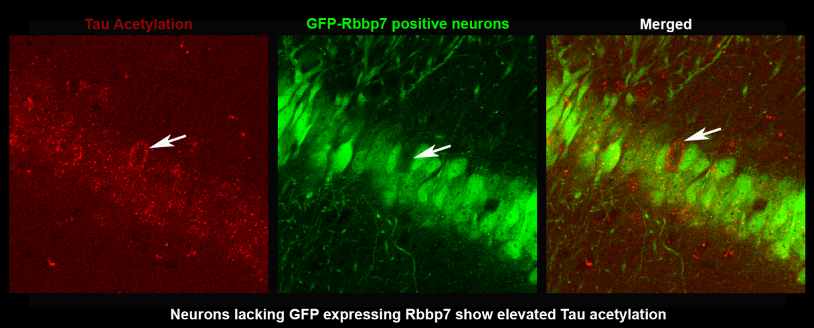
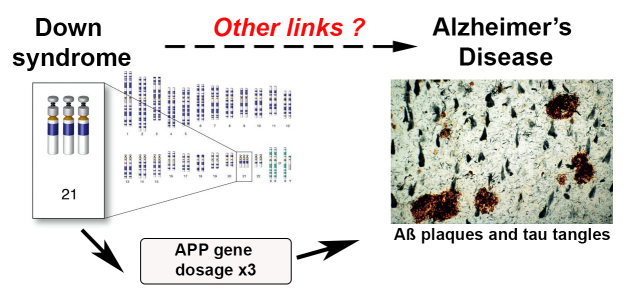
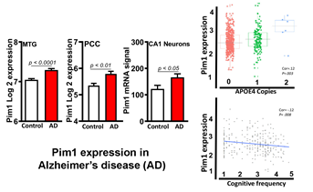

Current Projects
Determine Whether Widespread Dietary Choline Deficiency Increases Alzheimer’s Disease Risk
Choline, a key nutrient found in common foods, is required to produce acetylcholine, a neurotransmitter responsible for memory, muscle control and mood. It also builds cell membranes and plays a vital role in regulating gene expression. Choline is also a primary dietary source of methyl groups converting homocysteine (Hcy), a toxic amino acid, to methionine. Notably, elevated levels of Hcy increases the risk of developing AD and has been mechanistically linked to the production of Aβ plaques. While humans and rodents can produce endogenous choline, these levels fail to meet bodily demands, requiring dietary consumption. In 1998, the U.S. established an adequate intake (AI) of dietary choline per day for adult women (425mg/day) and men (550mg/day) to deter from fatty liver disease. However, a converging line of evidence in both rodent models and humans indicates that the current AI may not be optimal for proper brain health and cognition, given choline’s role in the brain. Decades of research, including many of our publications, have shown that supplementing the maternal diet (during gestation and lactation) with 4.5x the AI of choline produces profound benefits on the offspring’s brain health and cognition. In particular, these studies have demonstrated amelioration of cognitive deficits in mouse models of Down syndrome and AD. Most recently, it has been shown that a lifelong regimen of choline supplementation from early to late adulthood reduces brain inflammation, Aβ plaque burden, and associated cognitive deficits in male and female AD mice. While a vast majority of choline research has focused on its supplementation effects to reduce cognitive deficits and AD pathology, epidemiology studies show that a shocking 90% of Americans fail to reach the daily AI. This results in a twofold problem; 1) most Americans are choline deficient and 2) the current choline AI per day is not optimal for brain health. Thus, it is imperative to determine whether a diet deficient in choline throughout life increases the risk of AD. Establishing whether dietary choline deficiency increases AD pathology will provide much needed information on the need of choline in the daily diet for the general population to reduce AD risk.
Glyphosate Exposure a Risk Factor for Cognitive Aging and Alzheimer’s Disease

Glyphosate is a toxic herbicide that has been the most heavily used since its inception in the 1970s. Glyphosate-based herbicides often contaminate drinking water, precipitation, and air in agricultural communities and products. While the effects of glyphosate toxicity have been extensively studied in relation to the peripheral body, they have not in the brain. This fact is particularly concerning since glyphosate can cross the blood-brain barrier (BBB) in humans. Notably, correlations exist between AD and dementia death rates and glyphosate exposure. However, it has yet to be determined whether there is a causal relationship between glyphosate exposure and AD. Given that environmental factors are at play for late-onset sporadic AD, which accounts for >95% of those affected, understanding whether glyphosate exposure plays a role in inducing cognitive deficits could determine if glyphosate is, in fact, a risk factor for this insidious disease. The overall goal of this project is to identify the detectable level of glyphosate that induces cognitive deficits in humans and to determine whether such exposure increases AD risk and neuropathology.
Identification of the Retinoblastoma Binding Protein 7 (Rbbp7) as a Mediator of Tau Pathology in Alzheimer’s Disease
Evidence indicates that tau hyperphosphorylation and subsequent neurofibrillary tangles contribute to the extensive neuronal death in Alzheimer’s Disease (AD) and related tauopathies. However, the complete mechanisms underlying this pathogenesis remains elusive. Work has highlighted the role of the epigenome in tau pathogenesis, suggesting that dysregulation of epigenetic proteins may contribute to acetylation and hyperphosphorylation of cytoplasmic tau. Several epigenetic complexes have been implicated in epigenomic dysfunction related to tauopathies. We have identified the histone-binding subunit of the Nucleosome Remodeling and Deacetylase complex: Retinoblastoma Binding Protein 7 (Rbbp7). Rbbp7 chaperones several chromatin remodeling proteins to their nuclear histone substrates, including histone acetylases and deacetylases. Notably, Rbbp7 binds to chromatin remodeling factors which have been implicated to increase the secretion of tau, including p300/CBP. We have interrogated Rbbp7 in post-mortem brain tissue, cell lines and mouse models of AD and have found reduced mRNA Rbbp7 expression in AD cases and a significant negative correlation with Braak Staging, a measure of pathogenic tau inclusions. Rbbp7 protein levels are significantly decreased in 3xTg-AD and PS19 compared to NonTg mice, but no decreases are seen in APP/PS1 mice that lack tau mutations. Hippocampal overexpression of Rbbp7 rescues neuronal death and reduced pathological tau markers in PS19 mice. Collectively, we identify a novel role of Rbbp7 in protecting against tau-related pathologies and highlight its potential as a therapeutic target in AD and related tauopathies.
Deciphering the Early Molecular Events in Down Syndrome that Contribute to Alzheimer's Disease Progression
Growing evidence indicates that Alzheimer's disease (AD) starts decades before its clinical manifestation and that early clinical interventions are needed to effectively mitigate the progression of AD. However, the initial triggers in the cascade of pathological events leading to AD remain elusive. Virtually 100% of people with Down syndrome (DS) will show brain accumulation of amyloid-β (Aβ) and tau in their fifth decade of life. Despite these data, little is known about the processes linking DS to AD. We postulate that dissecting the molecular mechanisms driving AD pathology in DS patients will lead to a better understanding of the etiology of AD. Previous work indicates that the mammalian target of rapamycin (mTOR) is hyperactive in human and animal models of DS and AD. Further, we and others have shown that hyperactive mTOR signaling facilitates the accumulation of Aβ and tau. Together, these novel and exciting findings may answer a fundamental unresolved question: which event triggers the development of AD neuropathology in DS. The answer to this question will unveil mechanistic changes linked to the etiology of AD. The overall hypothesis of this project is that dysfunctional tuberous sclerosis complex 2 (TSC2), which is a regulator of mTOR, increases it’s activity in DS, which in turn contributes to the development of AD-like neurodegeneration. The results from this work will lead to a better understanding of the mechanism leading to neurodegeneration in DS and AD and will identify new therapeutic targets for these two disorders.
The Pim1 Kinase as a Contributor to the Pathological Progression of Alzheimer's Disease
Pim1, a protein kinase from the proto-oncogene family, emerged in research as it is elevated in various cancers. Within the brain, Pim1 is expressed exclusively in the cortex and hippocampus, two brain regions that are highly vulnerable to AD pathology. We identified Pim1 as being dysregulated in post-mortem brain tissue of patients with in early and late stages of AD compared to age-matched controls. Physiologically, Pim1 phosphorylates and regulates the activity of the proline-rich AKT substrate 40 kDa (PRAS40), which is involved in modulating protein degradation. Pim1 also plays key functions in long-term potentiation and synaptic plasticity, and increased Pim1 activity is linked to seizures and neuronal death. Pim1 is regulated by JAK/STAT, a pathway activated by inflammation. Our recent data illustrates that Pim1 is elevated in CA1 hippocampal neurons of AD patients and our published work shows that pharmacological inhibition of Pim1 rescues AD pathology in 3xTg-AD mice. Notably, 3xTg-AD mice develop amyloid-β plaques and pathological tau, which are the two hallmark pathologies in AD. The current goals of this project are to determine how modulating neuronal Pim1 activity interferes with AD pathology and to dissect the upstream mechanisms linked to Pim1 upregulation. We hypothesize that activation of the JAK/STAT pathway by inflammatory cytokines increases Pim1 activity, which in turn facilitates the development of AD pathology.
Techniques Performed in Our Laboratory
- Development and usage of genetic mouse models of Down syndrome and Alzheimer's Disease (e.g. Ts65Dn, APP/PS1, PS19, APP Knock-in).
- Immunohistochemistry
- Western blot assay
- Confocal Microscopy
- MBF unbiased stereology and Neurolucida dendritic spine quantification
- Genotyping and qPCR
- Behavioral assessment in mice (Rota Rod, Morris water maze, Radial arm water maze)
- Automated behavioral assessment in mice using the TSE IntelliCage system